품질경영기사 (2019-04-27 기출문제)
1과목: 실험계획법
1. 실험의 목정 중 어떤 요인이 반응에 유의한 영향을 주고 있는가를 파악하는 것은 무엇에 관한 것인가?
- 검정의 문제
- 추정의 문제
- 오차항 추정의 문제
- 최적반응조건의 결정문제
(정답률: 64%)

2. 분할법에서 2차 요이과 3차 요인의 교호작용은 몇 차 단위의 요인이 되는가?
- 1차 단위
- 2차 단위
- 3차 단위
- 4차 단위
(정답률: 72%)
3. A(4수준), B(5수준) 요인으로 반복 없는 2요인 실험에서 결측치가 2개 생겼을 경우 측정값을 대응하여 분산분석을 하면 오차항의 자유도는?
- 8
- 9
- 10
- 11
(정답률: 69%)
4. 라틴방격법에 해당하는 것은? (단, 문자1, 2, 3,은 세 가지 처리의 각각을 나타낸다.)
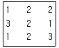
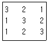
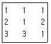
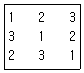
(정답률: 78%)
5. 2개의 대비 c1y1+c2y2+c3y3, d1y1+d2y2+d2y2+d3y3 로 직교(orthogonal)하기 위한 조건은?
- c1d1+c2d2+c3d3=0
- c1d1+c2d2+c3d3=1
- c1+d1+c2+d2+c3+d3=0
- c12+c22+c32=1, d12+d22+d32=1
(정답률: 67%)
6. 요인 A가 변량요인일 때, 수준수가 4가, 반복수가 6인 1요인 실험을 하였더니 ST= 2.148, SA=1.979였다.
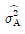
의 값은 약 얼마인가?- 0.109
- 0.126
- 0.136
- 0.241
(정답률: 58%)
7. 33형의 1/3 반복에서 I=ABC2을 정의대비로 9회 실험을 하였다. 이에 대한 설명으로 틀린 것은?
- C의 별명 중 하나는 AB이다.
- A의 별명 중 하나는 AB2C이다.
- AB2의 별명 중 하나는 AB이다.
- ABC의 별명 중 하나는 AB이다.
(정답률: 71%)
8. 다음은 요인 A를 4수준, 요인 B를 2수준, 요인 C를 2수준, 반복 2회의 지분실험법을 실시한 결과를 분산분석표로 나타낸 것이다. 이에 대한 설명으로 틀린 것은?
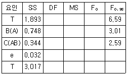
- 요인 A의 자유도는 3이다.
- 요차항의 자유도는 15이다.
- 요인B(A)의 자유도는 4이다.
- 요인 B(A)의 분산비 검정은 요인 C(AB)의 분산으로 검정한다.
(정답률: 73%)
9. 단순회귀식
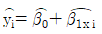
를 다음 데이터에 의해 구할 경우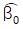
은 약 얼마인가?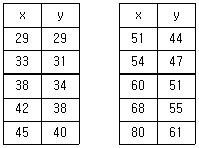
- 6.45
- 7.55
- 9.28
- 10.14
(정답률: 61%)
10. 1요인 실험에 대한 설명 중 틀린 것은?
- 교호작용의 유ㆍ무를 알 수 있다.
- 결 측지가 있어도 그대로 해설할 수 있다.
- 특성치는 랜덤한 순서에 의해 구해야 한다.
- 반복의 수가 모든 수준에 대하여 같지 않아도 된다.
(정답률: 59%)
11. 1요인 실험에서 데이터의 구조가 xij=μ+ai+eij로 주어질 때
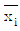
의 구조는? (단, i=1.2, ㆍㆍㆍ, l이며, j=1, 2, ㆍㆍㆍ, m이다.)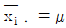
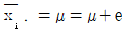
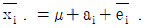
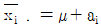
(정답률: 74%)
12. 모수모형 2요인 실험의 분산분석을 실시한 결과 교호작용이 무시되었다. 오차항에 풀링한 후 요인 B의 분산비를 구하면 약 얼마인가?
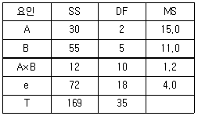
- 2.75
- 3.67
- 5.50
- 9.17
(정답률: 70%)
13. 다음과 같은 모수모형 3요인 실험의 분산분석에서 유의하지 않은 교호작용을 오차항에 풀링시켜 분산분석표를 새로 작성하면, 요인 C의 분산비(F0)는 야 얼마인가? (단, A×B×C는 오차와 교락되어 있다.)
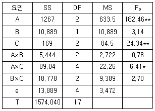
- 13.64
- 17.74
- 24.34
- 31.04
(정답률: 64%)
14. 부적합 여부의 동일성에 관한 실험에서 적합품이면 0, 부적합품이면 1의 값을 주기로 하고, 4대의 기계에서 200개씩 제품을 만들어 부적함여부를 실험하였다. vA와 ve의 값은?
- vA=3, ve=396
- vA=4, ve=396
- vA=3, ve=796
- vA=4, ve=796
(정답률: 73%)
15. 다음은 L8(27)형 직교배열표의 일부이다. 1열에 배치된 A의 VA는 얼마인가?
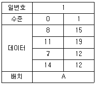
- 10.5
- 20.5
- 30.5
- 40.5
(정답률: 54%)
16. 반복이 없는 22형 요인실험에 대한 설명 중 틀린 것은?
- 요인의 자유도는 1이다.
- 오차의 자유도는 1이다.
- 2개의 주효과가 존재한다.
- 교호작용 A×B를 검출할 수 있다.
(정답률: 62%)
17. L9(34)형 직교배열표를 사용해 다음과 같은 결과를 얻었다. 오차항의 자유도는 얼마인가?
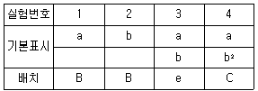
- 1
- 2
- 3
- 4
(정답률: 47%)
18. 측정치가 y이고, 목표치가 m이며, 측정한 복표치가 주어져 있을 때 손실함수 식은?
- L(y)=A△2(y-m)2
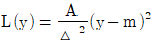
- L(y)=A△2(y+m)2
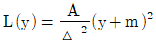
(정답률: 55%)
19. 32형 요인실험을 동일한 환경에서 실험하기 곤란하여 3개의 블록으로 나누어 실험을 한 경과 다음과 같은 데이터를 얻었다. 요인 A의 제곱합(SA)은 얼마인가?
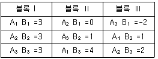
- 6
- 7
- 8
- 9
(정답률: 65%)
20. 1요인 실험에서 단순한 반복의 실험을 행하는 것보다는 반복을 블록으로 나누어 2요인 실험으로 하는 편이 정보량이 많게 된다. 이때 층별이 잘 되었다면 검출력과 오차항의 자유도는 어떻게 되겠는가?
- 검출력은 나빠지나 오차항의 자유도는 크게 된다.
- 검출력은 나빠지나 오차항의 자유도는 작게 된다.
- 검출력은 좋아지며 오차항의 자유도는 크게 된다.
- 검출력은 좋아지며 오차항의 자유도는 작게 된다.
(정답률: 42%)
2과목: 통계적품질관리
21. 관리도에 관한 내용 중 맞는 것은?
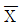
관리도에 있어 관리한계를 벗어나는 점이 많아질수록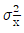
는 크게 된다.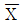
관리도의 관리한계는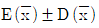
이며, 시료의 크기는 √n 으로 결정된다.- p관리도에서는 각 조의 샘플의 크기(n)를 일정하게 하지 않아도 관리한계는 항상 일정하다.
- 공정이 관리상태에 있다고 하는 것은 규격을 벗어나는 제품이 전혀 발생하지 않는다는 것은 의미한다.
(정답률: 57%)
22. 어떤 로트의 모부적합수는 m=16,0이었다. 작업내용을 개선한 후에 표본의 부적합수는 a=12.0이 되었다. 검정통계량(u0)은 얼마인가?
- -1.00
- -0.75
- 0.75
- 1.00
(정답률: 64%)
23.
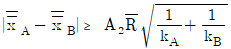
는 2개의 층 A, B간 평균치의 차를 검정할 때 사용한다. 이 식의 전제조건으로 틀린 것은? (단, k는 시료군의 수, n은 시료군의 크기이다,)- kA=kB일 것
- nA=nB일 것
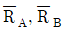
는 유의 차이가 없을 것- 두 개의 관리도는 관리상태에 있을 것
(정답률: 78%)
24. Y 제조공정에서 제조되는 부품의 특성치를 장기간에 걸쳐 통계적으로 해석하여 본 결과 μ=15.02mm, σ=0.03mm인 것을 알았다. 이 공정에서 오늘 제조한 부품 9개에 대하여 특성치를 측정한 결과
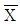
=15.08mm인 것을 알았다. 유의수준을 5%로 잡고 평균에 변화가 있는가를 검정하면?- u0≤ua로서 평균치가 변했다.
- u0≥ua로서 평균치가 변했다.
- u0≤ua로서 평균치가 변하지 않았다.
- u0≥ua로서 평균치가 변하지 않았다.
(정답률: 50%)
25. p관리도와
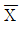
-R관리도에 대한 설명으로 틀린 것은?- 일반적으로 p관리도가
 -R관리도보다 시료 수가 많다.
-R관리도보다 시료 수가 많다. - 일반적으로 p관리도가
 -R관리도보다 얻을 수 있는 정보량이 많다.
-R관리도보다 얻을 수 있는 정보량이 많다. - 파괴검사의 경우 p관리도보다
 -R관리도를 적용하는 것이 유리하다.
-R관리도를 적용하는 것이 유리하다. 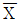
-R관리도를 적용하기 위한 예비적인 조사 분석을 할 때 p관리도를 적용할 수 있다.
(정답률: 61%)
26. 모분산(σ2)을 추정할 때 자유도가 커짐에 따라 신뢰구간의 폭은 일반적으로 어떻게 변하는가?
- 일정하다.
- 점점 커진다.
- 점점 작아진다.
- 영향을 받지 않는다.
(정답률: 63%)
27. 계량 규준형 1회 샘플링 검사(KS Q 0001 : 2013)에 있어서 로트의 표준편차 σ를 알고 하한규격치 SL이 주어진 로트의 부적합품률을 보증하고자 할 때 다음 중 어느 경우에 로트를 하는가?
 ＜SL+kσ이면 합격
＜SL+kσ이면 합격 ≥SL+kσ이면 합격
≥SL+kσ이면 합격 ＜mo+Goσ이면 합격
＜mo+Goσ이면 합격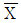
≥mo+Goσ이면 합격
(정답률: 57%)
28.
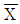
-R관리도에 있어서 완전관리상태(σb=0)인 경우의 관계식 중 맞는 것은? (단, σω2은 군내변동, σb2은 군간변동, σH2은 개개의 데이터산포이다.)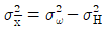
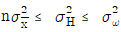
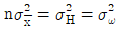
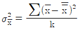
(정답률: 76%)
29. 제조공정의 관리, 공정검사의 조정 및 검사를 점검하기 위해 시행하는 검사방법은 무엇인가?
- 순회검사
- 관리 샘플링검사
- 비파괴검사
- 로트별 샘플링검사
(정답률: 64%)
30. 2개의 변량 x, y의 기대치는 각각 μx, μy이며, 분산의 모두 σ2이다. 이때
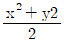
의 기대치는?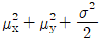
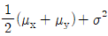
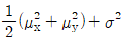
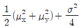
(정답률: 62%)
31. 그림의 세 가지 OC 곡선은 모두 2.2%의 부적합품률을 가지는 로트를 합격시킬 확률로 0.10을 갖는 샘플링 계획을 나타낸 것이다. 생산자 위험률이 가장 낮은 것은? (단, N은 로트 크기, n은 샘플 크기, c는 합격판정 개수이다.)
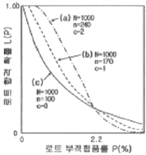
- (a)
- (b)
- (c)
- (b), (c)
(정답률: 59%)
32. 모집단이 정규분포일 때, 이것으로부터 n개의 표본을 랜덤하게 뽑고 불편분산을 구하였을 때 분상에 대해 설명한 것으로 맞는 것은?
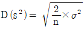
- 산포는 n이 커지면 작아진다.
- n이 커지면 카이 제곱 분포에 접근한다.
- n이 커지면 왼쪽 꼬리가 오른쪽 꼬리보다 길어진다.
(정답률: 53%)
33. 두 변량 사이의 직선관계 정도를 재는 촉도를 무엇이라 하는가?
- 결정계수
- 회귀계수
- 변이계수
- 상관계수
(정답률: 67%)
34. 적합도 검정에 대한 설명 중 틀린 것은?
- 관측도수는 실제 조사하여 얻은 것이다.
- 일반적으로 기대도수는 관측도수보다 적다.
- 기대도수는 귀무가설을 이용하여 구한 것이다.
- 모집단의 확률분포가 어떤 특정한 분포라고 보아도 좋은가를 조사하고 싶을 때 이용한다.
(정답률: 69%)
35. 어떤 제품의 품질 특성치는 평균 μ, 분산 σ2인 정규분포를 따른다. 20개의 제품을 표본으로 취하여 품질 특성치를 측정한 결과 평균 10, 표준편차 3을 얻었다. 분산 σ2에 대한 95% 신뢰구간은 약 얼마인가? (단, X20.975(19)=32.852, X20.025(19)=8.907이다.)
- 5.21~19.20
- 5.21~20.21
- 5.48~19.20
- 5.48~20.21
(정답률: 39%)
36. Y회사로부터 납품되는 약품의 유황 함유율 산포는 표준편차가 0.1%였다. 이번에 납품된 로트의 평균치를 신뢰율 95%, 정도(度精), 0.⑤%로 추정할 경우 샘플은 몇 개로 해야 하는가?
- 2
- 4
- 8
- 16
(정답률: 43%)
37. 샘플링 방식에서 같은 조건일 때 평균 샘플 크기가 가장 작은 샘플링은 어느 것인가?
- 1회 샘플링
- 2회 샘플링
- 다회 샘플링
- 축차 샘플링
(정답률: 48%)
38. 계수형 축차 샘플링 검사 방식(KS Q ISO 8422 : 2006)에서 누적 샘플크기(ncum)가 중 지시 누적 샘플크기(중지값)(nt)보다 작을 때 합격판정개수를 구하는 식으로 맞는 것은?
- 합격판정개수 A=hA+gncum 소수점 이하는 올린다.
- 합격판정게수 A=hA+gcum 소수점 이하는 버린다.
- 합격판정개수 A=-hA+gcum 소수점 이하는 올린다.
- 합격판정게수 A=-hA+gncum 소수점 이하는 버린다.
(정답률: 45%)
39.
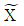
–R관리도에서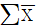
=741,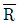
=27.4, k=25, n=5일 때, LCL은 약 얼마인가? (단, n=5인 경우, A=1.342, A2=0.577, A3=1.427, A4=0.691이다.)- 10.71
- 13.83
- 129.27
- 132.39
(정답률: 16%)
40. n=5이고, 관리상한(UCL)은 43.44, 관리하한(LCL)은 16.56인 관리도가 있다. 공정의 분포가 N(30, 102)일 때, 이 관리도에서 점 Xi가 관리한계 밖으로 나올 확률은 얼마인가? (문제 오류로 가답안 발표시 4번으로 발표되었지만 확정답안 발표시 모두 정답처리 되었습니다. 여기서는 가답안인 4번을 누르면 정답 처리 됩니다.)
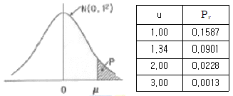
- 0.0228
- 0.0456
- 0.0901
- 0.1802
(정답률: 63%)
3과목: 생산시스템
41. PERT/CPM 기법에서 여유시간에 관한 설명으로 맞는 것은?
- 독립여유시간 : 후속활동을 가장 빠른 시간에 착수함으로써 얻게 되는 여유시간
- 총여유시간 : 모든 후속작업이 가능한 빨리 시작될 때 어떤 작업의 이용 가능한 여유시간
- 자유여유시간 : 어떤 작업이 그 전체 공사의 최종완료일에 영향을 주지 않고 지연될 수 있는 최대한의 여유시간
- 갑섭여유시간 : 선행작업이 가장 빠른 개시시간에 착수되고, 후속작업이 가장 늦은 개시시간에 착수된다 하더라도 그 작업기일을 수행한 후에 발생되는 여유시간
(정답률: 40%)
42. 다중활동분석의 목적이 아닌 것은?
- 유휴시간의 단축
- 경제적인 작업조 편성
- 작업자의 피로 경감 분석
- 경제적인 담당기계 대수의 산정
(정답률: 61%)
43. 포드(Ford) 시스템의 특징에 관한 설명으로 가장 거리가 먼 것은?
- 동시관리
- 차별성과급제
- 이동조립법
- 생산의 표준화
(정답률: 73%)
44. 작업의 우선순위 결정기준에 대한 설명으로 틀린 것은?
- 여유시간법은 여유시간이 최소인 작업을 먼저 수행한다.
- 긴급률법은 긴급률이 가장 큰 작업을 먼저 수행한다.
- 납기우선법은 납기가 가장 빠른 작업을 먼저 수행한다.
- 최단처리시간법은 작업시간이 가장 짧은 작업을 먼저 수행한다.
(정답률: 72%)
45. MRP 시스템의 출력결과가 아닌 것은?
- 계획납기일
- 계획주문의 양과 시기
- 안전재고 및 안전조달기간
- 발생된 주문의 독촉 또는 지연 여부
(정답률: 47%)
46. 고장을 예방하거나 조기 조치를 하기 위하여 행해지는 급유, 철소, 조정, 부품교환 등을 하는 것은?
- 설비검사
- 보전예방
- 개량보전
- 일상보전
(정답률: 51%)
47. MRP 시스템에서 주일정계획(MPS)에 의하여 발생된 수요를 충족시키기 위해 새로 계획된 주문에 의해 충당해야 하는 수량은?
- 순소요량(net requirements)
- 계획수취량(planned receipts)
- 총소요량(gross requirements)
- 계획주문발주(planned order release)
(정답률: 41%)
48. 표준화된 자재 또는 구성 부분폼의 단순화로 다양한 제품을 만드는 것으로 다품종생산을 통해 다양한 수요를 흡수하고 표준화된 자재에 의해서 표준화의 이익, 즉 경제적 생산을 달성하려는 생산시스템은?
- JIT 생산시스템
- MRP 생산시스템
- Modular 생산시스템
- 프로젝트 생산시스템
(정답률: 60%)
49. 공급시술관리에서 재지 공급업체에서 파견된 직원의 구매기업에 상주하면서 적정재고량이 유지되도록 관리하는 기법은?
- Cross-docking
- Quick-Response
- Vendor Managed Inventory
- Total Productive Maintenace
(정답률: 63%)
50. M 기업은 매년 10000 단위의 부품 A를 필요로 한다. 부품 A의 주문비용은 회당 20000원, 단가는 5000원, 연간 단위당 재고유지비가 단가의 2%라면 1회 경제적 주문량은 약 얼마인가?
- 500단위
- 1,000단위
- 1,500단위
- 2,000단위
(정답률: 59%)
51. GT(Group Technology)에 관한 설명으로 가장 거리가 먼 것은?
- 배치 시에는 혼합형 배치를 주로 사용한다.
- 생산설비를 기계군이나 셀로 분류, 정돈한다.
- 설계상, 제조상 유사성으로 구분하여 부품군으로 집단화한다.
- 소품종 대량생산시스템에서 생산능률을 향상시키기 위한 방법이다.
(정답률: 64%)
52. 생산시스템에 관한 설명으로 틀린 것은?
- 교량, 댐, 고속도로 건설 등을 프로젝트 생산이라 할 수 있으며, 시간과 비용이 많이 든다.
- 선박, 토목, 특수기계 제조, 맞춤의류, 자동차수리업 등에서 볼 수 있는 개별생산은 수료변화에 대한 유연성이 높으며 생산성 향상과 관리가 용이하다.
- 로트 크기가 작은 소로트생산은 개별생산에 가깝고 로트 크기가 큰 대로트생산은 연속생산에 가까워서 로트생산시스템은 개별생산과 연속생산의 중간 형태라고 볼 수 있다.
- 시멘트, 비료 등의 장치산업이나 TV, 자동차 등을 대량으로 생산하는 조립업체에서 볼 수 있는 연속생산은 품질유지 및 생산성 향상이 용이한 반면에 수요에 대한 적응력이 떨어진다.
(정답률: 62%)
53. 도요타 생산방식의 특징에 관한 설명으로 틀린 것은?
- 자재흐름은 밀어내기 방식이다.
- 공정의 낭비를 철저히 제거한다.
- 자재의 흐름 시점과 수량은 간판으로 통제한다.
- 재고를 최소화하고 조달기간은 짧게 유지한다.
(정답률: 66%)
54. 워크샘플링에서 상태오차를 S, 관측항목의 발생비율을 P, 관측횟수를 N이라고 하면 절대오차는 어떻게 표현되는가?
- SP
- SN
- PN
- S2P
(정답률: 52%)
55. 총괄생산계획(Aggregate Planning) 기법 중 탐색결정규칙(Search Decision Rule)에 대한 설명으로 틀린 것은?
- Taubert에 의해 개발된 휴리스틱기법이다.
- 과거의 의사결정들을 다중회귀분석하여 의사결정규칙을 추정한다.
- 총 비용함수의 값을 더 이상 감소시킬 수 없을 때 탐색을 중단한다.
- 하나의 가능한 해를 구한 후 패턴탐색법을 이용하여 해를 개선해 나간다.
(정답률: 35%)
56. 1일 조업시간이 480분인 공장에서 1일 부하시간 450분, 고장시간 30분, 준비시간 30분, 조정시간 30분인 경우, 시간가동률은 약 몇 %인가?
- 77
- 80
- 82
- 89
(정답률: 53%)
57. 여유시간의 분류에서 특수여유에 해당하지 않는 것은?
- 조여유
- 기계간섭여유
- 소르트여유
- 불가피지연여유
(정답률: 39%)
58. 동시동작 사이클 차트(Simo chart)를 이용하는 기법은?
- Strobo 사진분석
- Cycle Graph 분석
- Micro Motion Study
- Memo Motion Study
(정답률: 43%)
59. 한계이익률을 구하는 산출식으로 맞는 것은?
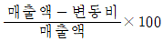
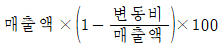
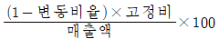
(정답률: 53%)
60. 기업이 ERP시스템 구축을 추진할 때 외부전문위탁개발(Outsourcing) 방식을 택하는 경우가 많다. 이 방식의 특징과 가장 거리가 먼 것은?
- 외부전문 개발인력을 활용한다.
- ERP시스템을 확장하거나 변경하기 어렵다.
- 개발비용은 낮으나 유지비용이 높게 소요된다.
- 자사의 여건을 최대한 반영한 시스템 설계가 가능하다.
(정답률: 53%)
4과목: 신뢰성관리
61. 샘플 5개를 수명시험하여 간편법에 의해 와이블 모수를 측정하였더니 m=2, t0=ηm=90시간, r=0이었다. 이 샘플의 평균수명은 약 얼마인가? (단, Γ(1.2)=0.9182, Γ(1.3)=0.8873, Γ(1.5)=0.8362이다.)
- 7.93시간
- 8.42시간
- 8.68시간
- 8.71시간
(정답률: 43%)
62. 가속수명시험 설계 시 고장 매커니즘을 추론할 때 가장 효과적인 도구는?
- 신점도
- 회귀분석
- 검ㆍ추정
- FMEA/FTA
(정답률: 64%)
63. 어떤 시스템의 MTBF가 500시간, MTTR이 40시간이라고 할 때, 이 시스템의 가용도(Availability)는 약 얼마인가?
- 91.4%
- 92.6%
- 97.2%
- 98.2%
(정답률: 65%)
64. 지수분포의 수명을 갖는 n개의 부품에 대하여 수명시험을 실시하여 r개의 부품이 고장날 때 시험을 중단하였다. 이 부품의 평균수명을 θ라고 할 때, Ho:θ≤θ:0 vs H1:θ＞θo의 기각역은? (단, T는 총 시험시간이고, 유의수준은 α이다.)
(정답률: 53%)
65. 욕조형 고장률함수에서 우발고장기간에 대한 설명으로 맞는 것은?
- 설비의 노후화로 인하여 발생한다.
- 불량제조와 불량설치 등에 의해 발생한다.
- 고장률이 비교적 크며, 시간이 지남에 따라 증가한다.
- 고장률이 비교적 낮으며, 시간에 관계없이 일정하다.
(정답률: 61%)
66. 마모고장기간에 발생하는 마모고장의 원인이 아닌 것은?
- 낮은 안전계수
- 부식 또는 산화
- 불충분한 정비
- 마모 또는 피로
(정답률: 53%)
67. 지수수명분포를 갖는 동일한 컴포넌트를 병렬로 연결하여 시스템 평균수명을 개별 컴포넌트의 평균수명보다 2배 이상으로 하려면 최소 몇 개의 컴포넌트가 필요한가?
- 2개
- 3개
- 4개
- 5개
(정답률: 55%)
68. 지수분포 f(t)=λe-λt의 분산으로 맞는 것은?
- 1/λ
- 2/λ
(정답률: 51%)
69. Y기기에 미치는 충격(shock)은 발생률 0.0003/h인 HPP(Homogeneous Poisson Process)를 따라 발생한다. 이 기기는 1번의 충격을 받으면 0.4의 확률로 고장이 발생한다. 5,000시간에서의 신뢰도는 약 얼마인가?
- 0.2233
- 0.5488
- 0.5588
- 0.6234
(정답률: 50%)
70. 신뢰성 샘플링 검사의 특징에 관한 설명으로 틀린 것은?
- 위험률 α와 β의 값을 작게 취한다.
- 정시중단방식과 정수중단방식을 채용하고 있다.
- 품질의 척도로 MTBF, 고장률 등을 사용한다.
- 지수분포와 와이블 분포를 가정한 방식이 주류를 이루고 있다.
(정답률: 53%)
71. 다음 FT(Fault Tree)도에서 시스템의 고장확률은 얼마인가? (단, 각 구성품의 고장은 서로 독립이며, 주어진 수치는 각 구성품의 고장확률이다.)
- 0.02352
- 0.02552
- 0.32772
- 0.35572
(정답률: 45%)
72. 와이블 확률지를 사용하여 μ와 σ를 추정하는 방법에 관한 설명으로 틀린 것은?
- 고장시간 데이터 ti를 적은 것부터 크기순으로 나열한다.
- In t0=1.0과 과의 교점을 m 추정점이라 한다.
- 타점의 직선과 F(t)=63%와 만나는 점의 아래 측 t눈금의 특성수명 η의 추정치로 한다.
- m 추정점에서 타점의 직선과 평행선을 그을 때, 그 평행선이 In t=0.0과 만나는 점을 우측으로 연장하여 μ/η와 σ/η의 값을 읽는다.
(정답률: 48%)
73. 10개의 샘플에 대한 수명시험을 50시간 동안 실시하였더니, 다음 표와 같은 고장시간 자료를 얻었다. 그리고 고장난 샘플은 새 것으로 교체하지 않았다. 평균수명의 점추정치는 얼마인가?
- 10시간
- 25시간
- 50시간
- 100시간
(정답률: 48%)
74. 와이블 분포의 확률밀도함수가 다음과 같을 때 설명 중 틀린 것은? (단, m은 형상모수, η은 척도모수이다.)
- 와이블분포에서 t-η일 때를 특성수명이라 한다.
- 와이블분포는 지수분포에 비해 모수 추정이 간단하다.
- 와이블분포는 수명자료 분석에 많이 사용되는 수명분포이다.
- 와이블분포에서는 고장률 함수가 형상모수 m의 변화에 따라 증가형, 감소형, 일정형으로 나타난다.
(정답률: 56%)
75. 아이템이 어떤 계약이나 프로젝트에 관련하여 규정된 신뢰성 및 보전성 요구 조건들을 만족시킴을 보증하는 조직, 구조, 책임, 절차, 활동, 능력 및 자원들의 이행을 지원하는 문서화된 일정 계획된 활동, 지원 및 사건들을 무엇이라고 하는가?
- 신뢰성 및 보전성 계획(reliability and maintainability plan)
- 신뢰성 및 보전성 통제(reliability and maintainability control)
- 신뢰성 및 보전성 보증(reliability and maintainability assurance)
- 신뢰성 및 보전성 프로그램(reliability and maintainability programme)
(정답률: 49%)
76. 지수분포를 따르는 어떤 부품을 n개 택하여 t0지점까지 수명시험한 결과 r개의 고장시간이 t1, t2, ㆍㆍㆍ, t0에서 일어났다고 한다면, 고장률 λ의 추정식으로 맞는 것은?
(정답률: 51%)
77. 설계단계에서 신뢰성을 높이기 위한 신뢰성 설계방법이 아닌 것은?
- 리던던시 설계
- 디레이팅 설계
- 사용부품의 표준화
- 예방보전과 사후보전 체계확립
(정답률: 53%)
78. ESS(Environmental Stess Stress Screening)에서 스트레스에 의하여 확인될 수 있는 고장모드에는 온도사이클과 임의진동이 있다. 이 중 온도사이클에 의한 스트레스로 발생할 수 있는 고장의 형태는?
- 끊어진 와이어
- 인접보드와의 마찰
- 부품 파라미터 변화
- 부적절하게 고정된 부품
(정답률: 42%)
79. 신뢰도가 동일한 10개의 부품으로 구성된 시스템이 정상 작동하기 위해서는 10개 부품 모두가 정상 작동해야 한다. 만약 시스템 신뢰도가 0.95 이상이 되려면, 부품 신뢰도는 최소 얼마 이상이어야 하는가?
- 0.950
- 0.975
- 0.995
- 0.999
(정답률: 60%)
80. 부하-강도 모형(stress-strength model)에서 고장이 발생할 경우에 관한 설명으로 틀린 것은?
- 고장의 발생 확률은 불신뢰도와 같다.
- 안전계수가 작을수록 고장이 증가한다.
- 부하보다 강도가 크면 고장이 증가한다.
- 불신뢰도는 부하가 강도보다 클 확률이다.
(정답률: 52%)
5과목: 품질경영
81. 산업표준화 분류 방식 중 국면에 따른 분류에 해당되지 않는 것은?
- 품질규격
- 제품규격
- 방법규격
- 전달규격
(정답률: 37%)
82. 생산활동이나 관리활동과 관련하여 일상적 또는 정기적으로 실시하는 계측과 가장 거리가 먼 것은?
- 생산설비에 관한 계측
- 자재ㆍ에너지에 관한 계측
- 작업결과나 성적에 관한 계측
- 연구ㆍ실험실에서의 시험연구 계측
(정답률: 53%)
83. 품질경영시스템-요구사항(KS Q ISO 9001:2015)의 특징이 아닌 것은?
- 목표달성을 위한 리스크 경영에 초점
- 제조중심의 검사, 시험, 감시 능력 제고
- ISO 9001에 기반한 품질경영시스템에 대한 고객의 확신 제고
- 제품 및 서비스에 대한 적합성을 제공할 수 있는 조직의 능력을 제고
(정답률: 44%)
84. 다음은 제조물책임법 제1조에 관한 사항이다. ㉠과 ㉡에 해당하는 용어로 맞는 것은?
- ㉠:소비자, ㉡:복지
- ㉠:소비자, ㉡:안전
- ㉠:제조업자, ㉡:복지
- ㉠:제조업자, ㉡:안전
(정답률: 53%)
85. 최초의 설계 잘못으로 제품의 설계변경에 소요되는 비용은 어느 코스트에 속하는가?
- 예방코스트
- 사내실패코스트
- 평가코스트
- 사외실패코스트
(정답률: 63%)
86. 부품 A는 N(2.5, 0.032), 부품 B는 N(2.4, 0.022), 부품 C는 N(2.4, 0.042), 부품 D는 N(3.0, 0.012)인 정규분포를 따른다. 이 4개를 부품이 직렬로 결합되는 경우 조립품의 표준편차는 약 얼마인가? (단, 부품 A, B, C, D는 서로 독립이다.)
- 0.003
- 0.⑤5
- 0.100
- 0.315
(정답률: 48%)
87. 사내표준화의 요건이 아닌 것은?(오류 신고가 접수된 문제입니다. 반드시 정답과 해설을 확인하시기 바랍니다.)
- 실행 가능한 내용일 것
- 기록내용이 구체적ㆍ객관적일 것
- 직감적으로 보기 쉬운 표현을 할 것
- 장기적인 관점보다 단기적인 관점에서 추진할 것
(정답률: 57%)
88. Cp=1.33이고, 치우침이 없다면 평균 μ에서 규격한계(U 또는 L)까지의 거리는 약 몇 σ인가?
- 2σ
- 3σ
- 4σ
- 6σ
(정답률: 41%)
89. 일종의 품질 모티베이션 활동인 ZD운동, QC 서클 활동 등은 소집단 활동이라는 데 공통점이 있다. 소집단 활동의 특징이 아닌 것은?
- 자주성을 키운다.
- 소수인이며, 다면접촉 집단에 해당된다.
- 대화에 의해 아이디어를 낳고 그것이 창의성을 유발한다.
- 소집단에 기초함으로써 문제해결에는 크게 도움이 되지 않는다.
(정답률: 66%)
90. 품질이 기업경영에서 전략변수로 중시되는 이유가 아닌 것은?
- 소비자들의 제품의 안전 또는 고신뢰성에 대한 요구가 높아지고 있다.
- 기술혁신으로 제품이 복잡해짐에 따라 제품의 신뢰성 관리문제가 어려워지고 있다.
- 제품 생산이 분업일 경우 부분적으로 책임이 지는 것이 제품의 신뢰성을 높인다.
- 원가 경쟁보다는 비가격경쟁 즉, 제품의 신뢰성, 품질 등이 주요 경쟁요인이기 때문이다.
(정답률: 53%)
91. 품질관리 담당자는 역할이 아닌 것은?
- 경쟁사 상품 및 부품과의 품질 비교
- 시내 표준화와 품질경영에 대한 계획수립 및 추진
- 품질경영 시스템 하의 내부감사 수행 총괄, 승인
- 공정이상 등의 처리, 애로공정, 불만처리 등의 조치 및 대책의 지원
(정답률: 44%)
92. 게하니(Ray Gehani) 교수가 구상한 품질가치사슬에서 TQM의 전략목표인 고객만족품질을 얻기 위하여 융합되어야 할 3가지 품질에 해당되지 않는 것은?
- 검사품질
- 경영종합품질
- 제품품질
- 전략종합품질
(정답률: 38%)
93. 길이, 무게, 강도 등과 같은 계량차의 데이터가 어떠한 분포를 하고 있는지를 보기 위하여 작성하는 QC 수법은?
- 층별
- 히스토그램
- 산점도
- 파레토그램
(정답률: 43%)
94. 품질경영시스템에서 품질전략을 결정하는 데 고려하여야 할 요소와 가장 거리가 먼 것은?
- 경영목표
- 예상편성
- 경영방침
- 경영전략
(정답률: 54%)
95. 다음은 키크 패트릭(Kirk Patrick)의 품질비용에 관한 그래프이다. 각 비용곡선의 명칭으로 맞는 것은?
- A:예방비용, B:실패비용, C:평가비용
- A:예방비용, B:평가비용, C:준비비용
- A:평가비용, B:실패비용, C:예방비용
- A:평가비용, B:예방비용, C:준비비용
(정답률: 58%)
96. 제품 또는 서비스가 품질요건을 만족시킬 것이라는 적절한 신뢰감을 주는 데 필요한 모든 계획적이고, 체계적인 활동을 무엇이라 하는가?
- 품질보증
- 제품책임
- 품질해석
- 품질방침
(정답률: 60%)
97. 6σ 적용 공장에서 현재의 Cp=2이나, 1.5σ의 공정변동이 일어날 경우 최소공정능력지수(Cpk)값은?
- 1.0
- 1.33
- 1.5
- 1.8
(정답률: 33%)
98. 품질시스템이 잘 갖추어진 회사는 끊임없는 개선이 이루어지는 것을 보장해야 한다. 끊임없는 개선에 대한 설명 중 틀린 것은?
- 기업에서 개선할 점은 언제든지 있다.
- 품질개선은 종업원의 창의성을 필요로 한다.
- P-D-C-A의 개선과정을 feed-back 시키는 것이다.
- 품질개선은 반드시 품질화된 기법을 적용하여야 한다.
(정답률: 53%)
99. 품질계획에서 많이 활용되는 품질기능전개(QFD)로 품질하우스 작성 시 무엇(what)과 어떻게(how)의 관계를 나타낼 때 사용하는 기법은?
- PDPC법
- 연관도법
- 매트리스법
- 친화도법
(정답률: 36%)
100. 표준의 서식과 작성방법(KS A 0001:2015)에서 문장을 쓰는 방법의 내용 중 틀린 것은?
- “초과”와 “미만”은 그 앞에 있는 수치를 포함시키지 않는다.
- “보다”는 비교를 나타내는 경우에만 사용하고, 그 앞에 있는 수치 등을 포함시키지 않는다.
- 한정조건이 이중으로 있는 경우에는 큰 쪽의 조건에 “때”를 사용하고, 작은 쪽의 조건에 “경우”를 사용한다.
- “및/또는”은 병렬하는 두 개의 어구 양자를 병합한 것 및 어느 한 쪽식의 3가지를 일괄하여 엄밀하게 나타내는 데 이용한다.
(정답률: 40%)